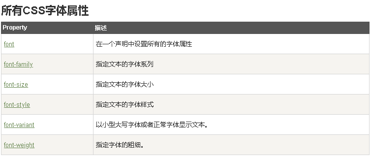

this
that
class 选择器用于描述一组元素的样式，class 选择器有别于id选择器，class可以在多个元素中使用。 class 选择器在HTML中以class属性表示, 在 CSS 中，类选择器以一个点"."号显示： 在以下的例子中，所有拥有 center 类的 HTML 元素均为居中。
p 居中
可以指定特定的HTML元素使用class。 在以下实例中, 所有的 p 元素使用 class="center" 让该元素的文本居中:
this is different
1.外部样式表，使用link标签连接到外部样式表，此标签写在文档头部
2.内部样式表，卸载文档内部，用style在文档头部定义
3.内联样式，当样式仅需要在一个元素上使用一次的时候使用，就是在相关的标签内部使用样式style属性，以下举个栗子
this is different p
4.多重样式，如果某些属性在不同的样式表中被同样的选择器定义，那么属性值将从更具体的样式表中被继承过来。
例如：
外部样式表拥有针对 h3 选择器的三个属性：
h3
{
color:red;
text-align:left;
font-size:8pt;
}
而内部样式表拥有针对 h3 选择器的两个属性：
h3
{
text-align:right;
font-size:20pt;
}
假如拥有内部样式表的这个页面同时与外部样式表链接，那么 h3 得到的样式是：
color:red;
text-align:right;
font-size:20pt;
即颜色属性将被继承于外部样式表，而文字排列（text-alignment）和字体尺寸（font-size）会被内部样式表中的规则取代。
多重样式，可以引入多个样式表，优先级问题：
内联样式）Inline style > （内部样式）Internal style sheet >（外部样式）External style sheet > 浏览器默认样式
注意：所处的位置顺序也很重要，举个栗子：
<head>
<link rel="stylesheet" type="text/css" href="style.css"/>
<style type="text/css">
/* 内部样式 */
h3{color:green;}
</style>
</head>
<body>
<h3>测试！</h3>
</body>
以上，如果外部样式放在内部样式的后面，则外部样式将覆盖内部样式。
CSS 属性定义背景效果:
背景图片不重复且有position
简写属性，以上的属性可以合并在一个“backgroung”的属性中
背景图片不重复且有position 简写版
------------------
多重嵌套举例
this is test color
this is smoe text
this is smoe text
this is smoe text
this is some text
this is some text
this is some text
this is some text
this is some text
this is some text
this is some text
this is some text
this is some text no br,this is some text no br,this is some text no br,this is some text no br,this is some text no br,this is some text no brthis is some text no brthis is some text no br
一个 默认对齐的图像。
一个 text-top 对齐的图像。
一个 text-bottom 对齐的图像。
this is some text
注意： Internet Explorer 9 以及更早的浏览器不支持 text-shadow 属性。
字体大小的值可以是绝对或相对的大小。
绝对大小：设置一个指定大小的文本 不允许用户在所有浏览器中改变文本大小 确定了输出的物理尺寸时绝对大小很有用
相对大小：
相对于周围的元素来设置大小 允许用户在浏览器中改变文字大小
Remark如果你不指定一个字体的大小，默认大小和普通文本段落一样，是16像素（16px=1em）。
为了避免Internet Explorer 中无法调整文本的问题，许多开发者使用 em 单位代替像素。
em的尺寸单位由W3C建议。
1em和当前字体大小相等。在浏览器中默认的文字大小是16px。
因此，1em的默认大小是16px。可以通过下面这个公式将像素转换为em：px/16=em
h1 {font-size:2.5em;} /* 40px/16=2.5em */
h2 {font-size:1.875em;} /* 30px/16=1.875em */
p {font-size:0.875em;} /* 14px/16=0.875em */
使用 em 单位，允许在所有浏览器中调整文本大小。 不幸的是，仍然是IE浏览器的问题。调整文本的大小时，会比正常的尺寸更大或更小。
this is some text italic
this is some text oblique
